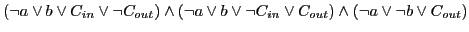
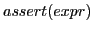
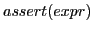
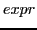
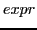

Apart from automatically checking properties of program, CBMC also provides set of keywords, which can be used to aide CBMC with more information about program. These keywords can be used for programs instrumentation. The program instrumentation is a procedure change or adds part code to verify some properties of the code.
-  or
 can be used to assert on any condition. It takes a Boolean expression  as argument. When CBMC encounters one of these keywords, it tries to generate a formula to check assertion failure. The generated formula is verified using SAT-solvers. If the formula is satisfied then assertion fails and CBMC generates error and produces counter-example showing possible trace of error.
can be used to assert on any condition. It takes a Boolean expression  as argument. When CBMC encounters one of these keywords, it tries to generate a formula to check assertion failure. The generated formula is verified using SAT-solvers. If the formula is satisfied then assertion fails and CBMC generates error and produces counter-example showing possible trace of error.
-
 keyword reduces the number of program traces that are considered and allows assume-guarantee reasoning. As ,
also takes a Boolean expression [10].
keyword reduces the number of program traces that are considered and allows assume-guarantee reasoning. As ,
also takes a Boolean expression [10].
ash
2012-09-13